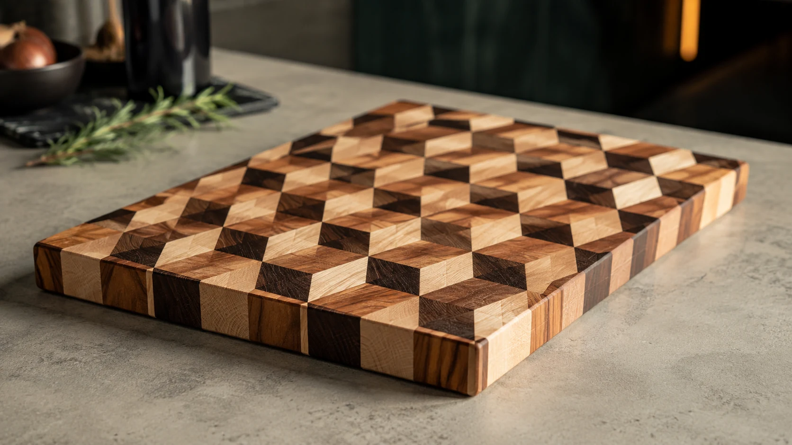
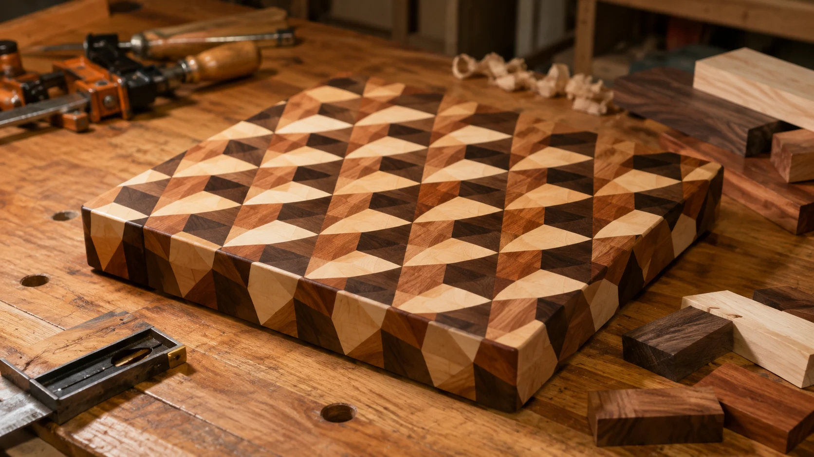
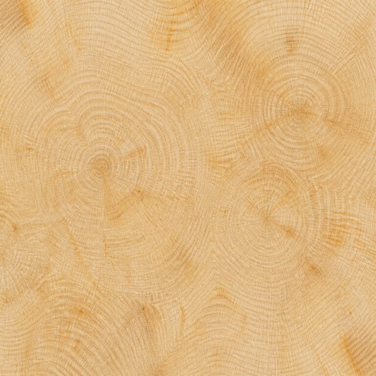
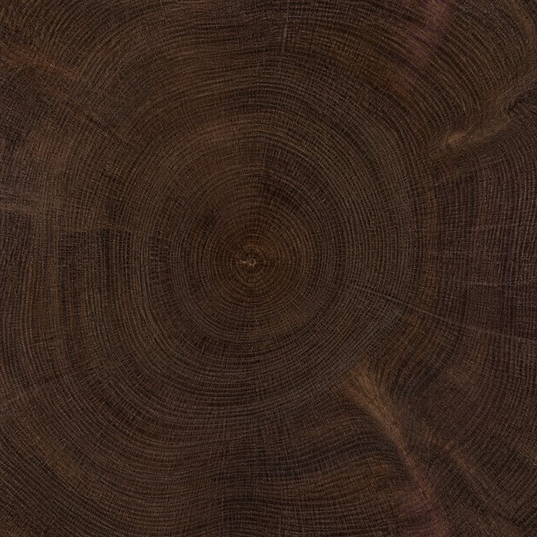
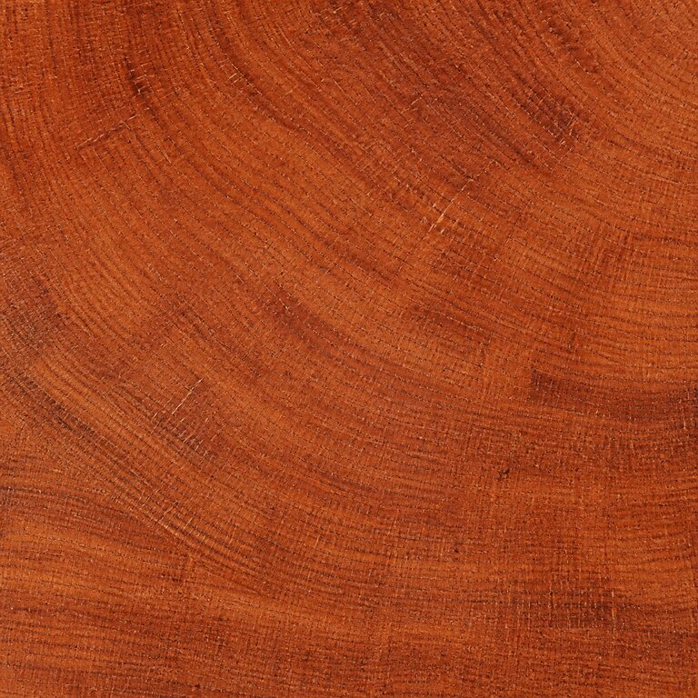

Pattern lab
Seeded-генерация создаёт воспроизводимую шахматную геометрию. Один seed — один и тот же результат.
ГотовоEND GRAIN STUDIO · COMPETITION BUILD
DREVOCOD соединяет вычислительную геометрию и столярное мастерство. Создайте торцевой узор, рассчитайте пропилы и материал — и заберите понятный маршрут изготовления в мастерскую.

Не очередная рисовалка.
01 · WORKING PROOF
Seeded-генерация создаёт воспроизводимую шахматную геометрию. Один seed — один и тот же результат.
ГотовоAmerican hard maple, black walnut и black cherry привязаны к реальным породам, размерам 8/4 и рыночным снимкам поставщиков.
ГотовоРазмер ячейки, толщина среза, число поперечных пилов, подготовленный объём и отход рассчитываются с учётом kerf и припусков.
ГотовоПроект сохраняется локально, узор экспортируется в PNG, а производственный рецепт можно распечатать.
ГотовоPARAMETRIC DIGITAL MVP
Флагман DREVOCOD: параметрический цифровой MVP торцевой доски с оптической кубической геометрией из американского клёна, чёрного ореха и вишни. End Grain Studio строит узор, производственный расчёт и оценку материала для этого пресета.
“Functional geometry.
Built in end grain.”
02 · FROM IDEA TO BENCH

Выберите породы, сетку и seed.
Покрасьте, поверните и отразите элементы.
Задайте kerf, торцевание и обработку.
Экспортируйте узор и распечатайте рецепт.
03 · MATERIAL SYSTEM

Acer saccharum
Светлая грань · ясная геометрия
Juglans nigra
Контрастная грань · визуальная глубина
Prunus serotina
Тёплая грань · медный переход04 · VERIFIED PIPELINE
Pattern / Seed / Materials
→Length / Width / Thickness / Grid
→Kerf / Angles / Cuts / Board Feet / Waste
→Workshop Recipe
→PNG / Print / Saved Project
Каталог использует коммерческие названия и ботанические виды: Acer saccharum, Juglans nigra и Prunus serotina. Цены отмечены как датированные рыночные снимки, а не как постоянное коммерческое предложение.
Открыть справочник материалов →DREVOCOD · END GRAIN STUDIO